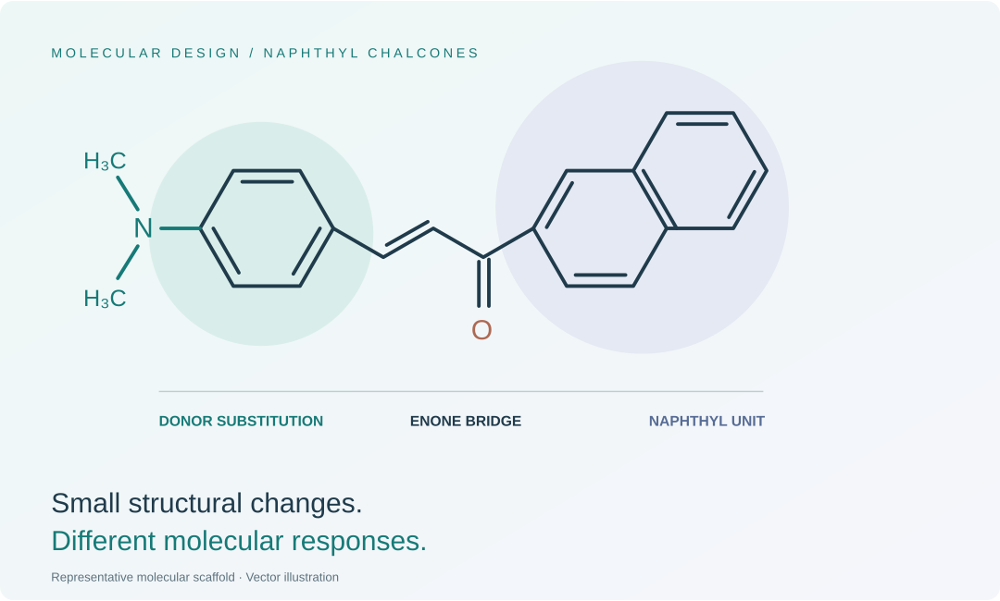

Design & synthesis
Chalcones, heterocyclic chromophores, and donor–acceptor molecular systems built through accessible organic transformations.
Research platforms →PhD Candidate in Chemistry · LUMS
I design and synthesize π-conjugated small molecules to understand how molecular structure controls light absorption, emission, and charge transfer.
My research connects organic synthesis with spectroscopy, electrochemistry, and DFT/TD-DFT calculations.

Changing a donor, acceptor, bridge, or scaffold can alter how a molecule interacts with light. My work follows those changes from synthesis to electronic structure.
Chalcones, heterocyclic chromophores, and donor–acceptor molecular systems built through accessible organic transformations.
Research platforms →Absorption, fluorescence, solvatochromism, and electrochemistry reveal how structural choices affect molecular behavior.
Experimental approach →DFT and TD-DFT connect experimental trends with orbital distributions, excited states, and calculated charge-transfer descriptors.
Computational approach →How changing the donor–acceptor arrangement in 2-aminoimidazolones shifts the balance between charge redistribution and fluorescence.
Read the research story →Turning a chalcone framework into pyrazoline–thiazole hybrids creates a new platform for tuning excited-state behavior.
Read the research story →An integrated experimental and computational study of how substituent and naphthyl positional changes influence conjugated chalcones.
Read the research story →My doctoral work at LUMS is supervised by Dr. Rahman Shah Zaib Saleem. The chemical genealogy page follows the lineage shared by my supervisor, from eighteenth-century chemistry to my current research.
Explore my chemical genealogy →Organic synthesis, molecular optoelectronics, and collaborative research.